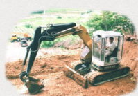
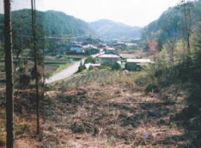
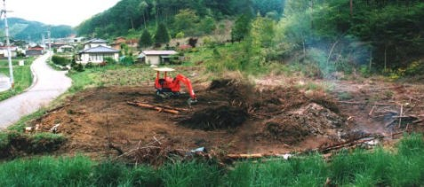
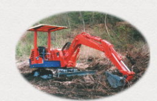
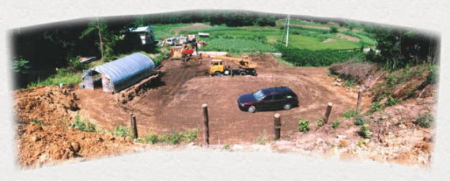

１９９７． ５．４ 〜 ８．１３
１９９７． ５．４ 〜 ８．１３ |
 |
中古のバックホーがトラックで到着し、これで作業が始められる。
最初にしたことは”たらの木”の移植、根っこごと掘り出して、端の方に
植えなおした。
|  | １９９７年５月 着工直前 いよいよ‥ |
|  | ’97.5.4 枯れ木、枯草を燃やし ながら、バックホーで 整地を進める |
|  塗装しなおしているのできれいですが、かなり年代物 この大きなおもちゃ、穴を掘っていると楽しくて 病み付きになりそう |
 ２台に交互に乗りながら、土留めの柱を立てる （黄色い方は借り物） |
|  ’97.8.13 整地完了 左側のビニールハウスは工具や材料等の保管場所 |